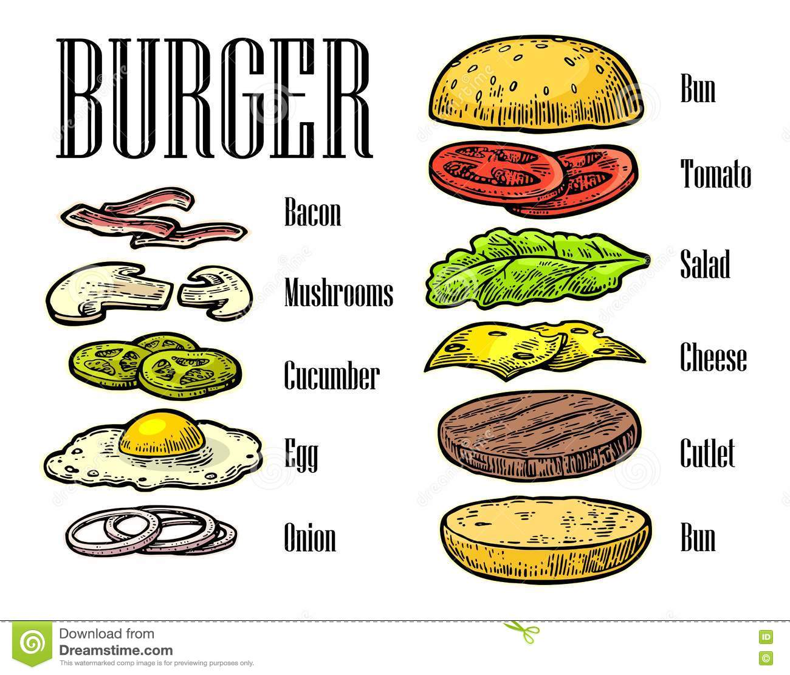

Ingrediënten
Dit zijn de ingrediënten die worden gebruikt voor de Smokey BaconBurger. Sommige producten zijn niet persee nodig maar zijn er gewoon bij voor een toevoeging van de smaak
Dit gerecht is voor 4 personen en de bereidingstijd is ongeveer 25 minuten.
- 4 Verse witte broodjes (bruin mag ook)
- 500 Gram versgedraaid Rundergehakt
- 1 Ei
- 2 Uien
- 2 Teentjes knoflook
- 1 Theelepel tabasco
- 1/2 Theelepel Cayennepeper
- 1/2 Eetlepel moster
- 1 Theelepel Worcestershire saus
- Een beetje Paneermeel
- Klontje boter
- 4 Dikke plakken ontbijtspek
- 50 Gram ijsbergsla
- 1 Tomaat
- 2 Augurken
- 4 plakken cheddar kaas
- 8 eetlepels barbecuesaus
